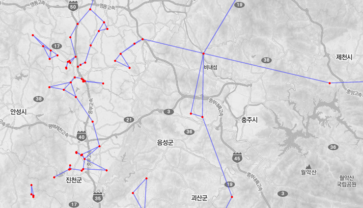

K-최근린 이웃 지도¶
포인트, 라인, 폴리곤 레이어를 이용하여 k-최근린 이웃을 연결하는 지도를 생성합니다.
Syntax
KNearestNeighborMap (SimpleFeatureCollection inputFeatures, Integer neighbor, Boolean convexHull) : SimpleFeatureCollection
Input Parameters
Identifier |
Description |
Type |
Default |
Required |
inputFeatures |
포인트, 라인, 폴리곤 유형의 입력 레이어입니다. |
SimpleFeatureCollection |
✓ |
|
neighbor |
라인을 연결할 최근린 이웃 수를 설정합니다. |
Integer |
1 |
✓ |
convexHull |
출력 라인 레이에어 Convex Hull을 추가할 지 여부를 설정합니다. |
Boolean |
false |
Process Outputs
Identifier |
Description |
Type |
Default |
Required |
result |
최근린 이웃을 나타내는 출력 레이어입니다. |
SimpleFeatureCollection |
✓ |
Constraints
Neighbor 파라미터는 1 이상이어야 하고 기본값은 1이다.
Output 레이어는 라인 피처 타입이다.
Examples
Neighbor 파라미터를 2로 설정하고 실행한 K-Nearest Neighbor 결과입니다.
